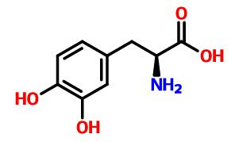
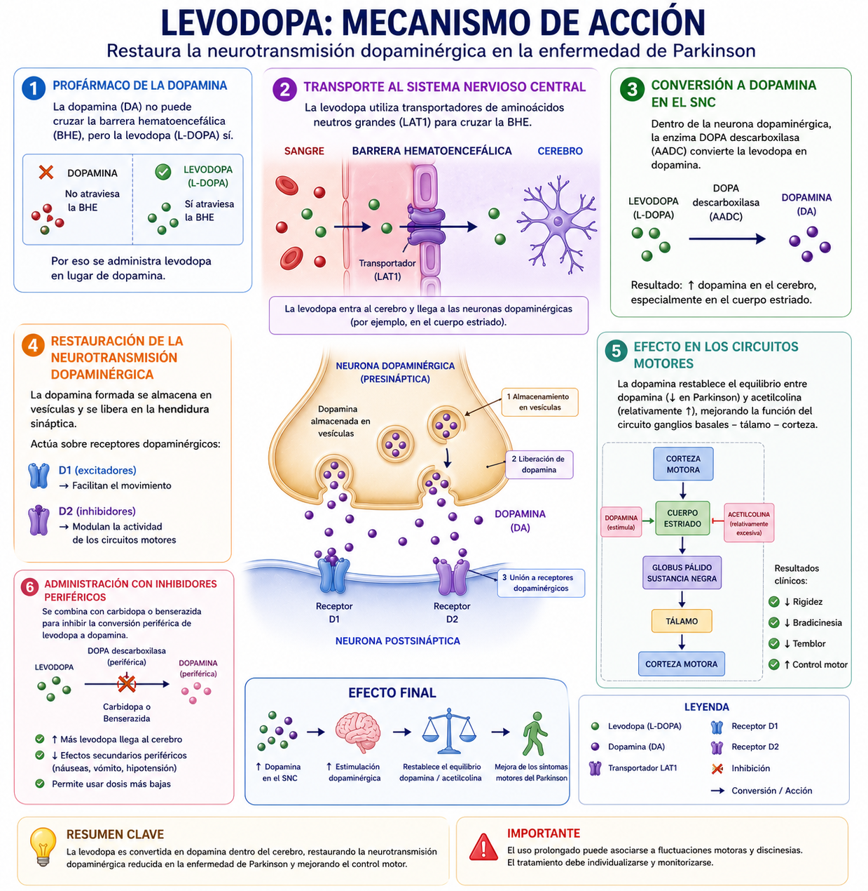

La Levodopa es el precursor metabólico directo de la dopamina y atraviesa la barrera hematoencefálica mediante transportadores de aminoácidos neutros. Una vez en el sistema nervioso central, es captada por neuronas dopaminérgicas y otras células, donde es convertida en dopamina por la enzima dopa descarboxilasa (AADC).
En condiciones normales, en la enfermedad de Parkinson existe una disminución de neuronas dopaminérgicas en la sustancia negra, lo que reduce los niveles de dopamina en el cuerpo estriado. La administración de levodopa permite restaurar parcialmente estos niveles al servir como sustrato para la síntesis de dopamina.
La dopamina formada se almacena en vesículas sinápticas y se libera al espacio sináptico, donde actúa como agonista funcional de los receptores dopaminérgicos (principalmente D1 y D2) en neuronas postsinápticas. Esto modula la actividad de los circuitos motores de los ganglios basales, facilitando el movimiento y reduciendo síntomas como rigidez y bradicinesia.
Sin embargo, en la periferia, la levodopa también puede ser convertida en dopamina por la AADC, lo que disminuye su disponibilidad central y genera efectos adversos. Por ello, suele administrarse junto con inhibidores periféricos como la carbidopa.
Como resultado final, la levodopa actúa como precursor que aumenta la síntesis de dopamina en el cerebro, estimulando receptores dopaminérgicos, lo que mejora la función motora en pacientes con enfermedad de Parkinson.
La Levodopa actúa como precursor de dopamina, ya que se convierte en este neurotransmisor dentro del cerebro mediante la enzima dopa descarboxilasa. La dopamina formada actúa como agonista de los receptores dopaminérgicos (D1 y D2), mejorando la señalización en los circuitos motores. Sin embargo, parte del fármaco se convierte en dopamina en la periferia, por lo que suele combinarse con inhibidores como la carbidopa para aumentar su eficacia y reducir efectos adversos.
Audio explicativo
Material visual

